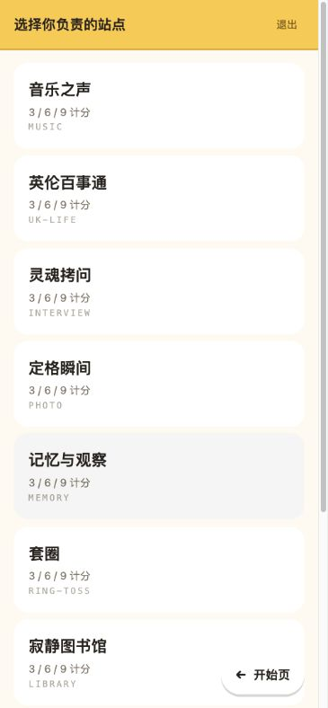
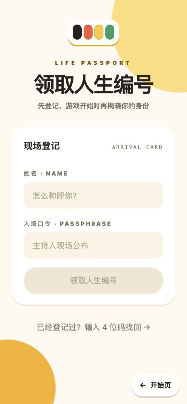
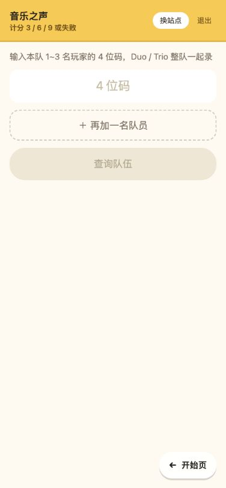
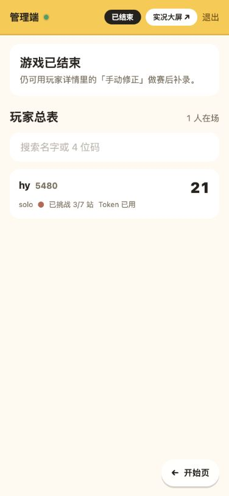
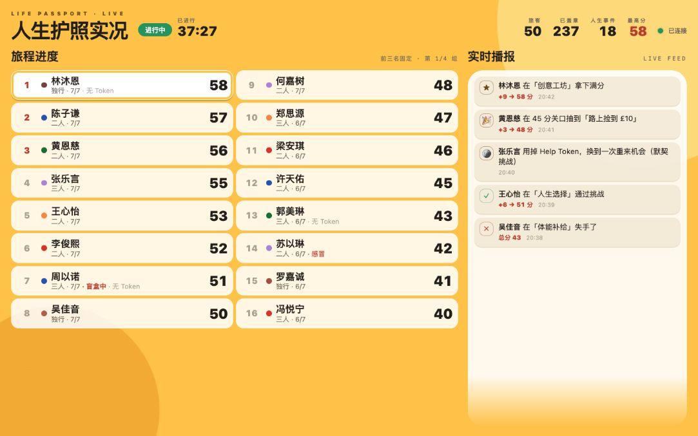

CREW 01
选择站点
登录一次后选择负责的实体站。主线站、盲盒站和恩典站用同一个入口。
Life Passport · Stakeholder Walkthrough
一场为英国华人教会迎新会设计的 60 分钟现场人生模拟游戏。这里展示当前可运行版本的真实用户流程与关键页面。
本页使用演示姓名和本地测试数据，不包含真实参与者信息。
01 · Player Journey
从登记、身份揭晓、七站挑战，到人生盲盒和最终分享。点击任一步骤，也可以让页面自动播放。

玩家输入姓名和现场口令。清晰的登记卡让第一次打开页面的人立刻知道要做什么。
02 · Crew & Control
工具端压低了视觉噪音，保留大按钮和明确状态。工作人员只看到自己需要完成的下一步。

登录一次后选择负责的实体站。主线站、盲盒站和恩典站用同一个入口。

一次录入 1 到 3 个编号，先核对人，再选择 3 / 6 / 9 分或失败。

总控掌握游戏阶段、玩家状态和手动修正入口，并能独立打开投影大屏。
03 · Live Screen
排行榜和事件播报每 3 秒更新。大屏只展示名字、身份、进度和分数，不展示可找回玩家护照的 4 位编号。

前三名持续固定，其余玩家每 8 秒自动轮播。截图使用 50 人演示数据，1024px 以上投影布局已完成浏览器回归。
04 · Current Scope
加入、找回、开局分组、七站计分、人生盲盒、Help Token、结算与分享图都已连通。
9/9 数据库测试通过；公开编号泄漏已关闭，密钥摘要存储、失败节流、安全响应头和会话级凭证已完成。
无需另一套数据库；建立生产 Supabase、应用全部迁移、配置正式口令，并完成一次 40–50 人真实设备彩排。